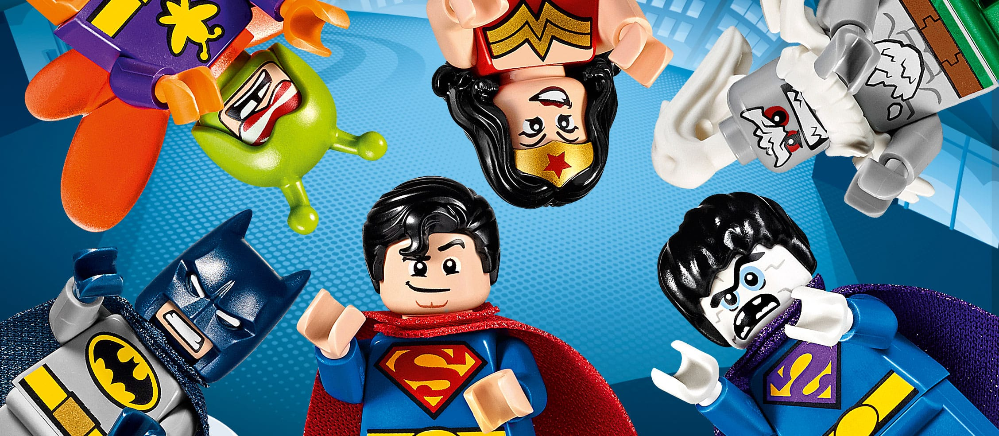

WHO ARE THE LEAGUE OF HEROES?
The League of Heroes is a band of Earth's mightiest costumed superheroes, who use their superpowers for good, fighting evil in all its forms. The League was founded in Toronto, Canada, by Dr. Goliath and his belief that he could make a better world, and that the law abiding public deserve more. Since our debut on the world stage in 2015 we have established ourselves as the first and foremost superhero team.